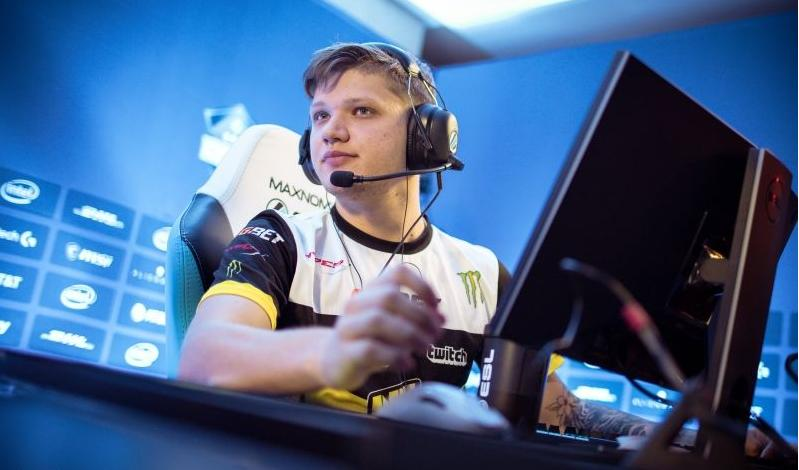

Counter-Strike: Global Offensive
- S1mple 
- Niko
- Zwyoo
S1mple、CSGOの世界では、神のような存在です。スナイパーであり、突破者であり、彼はチームのどの位置でも耐えられます。
完璧に任務を遂行することができます。現在彼は、チームNaviのスナイパーです。S1mpleは、2018年TOP１の選手でした。今まで彼は15個のMVPメダルを獲得しました。

個人的には、NikoはCSGOの中で最も天資が高い選手の一人だと思います。
akであれM4-A4であれ、 Nikoが手にすると、彼一人でも相手に対して大きな脅威を与えることができます。

彼は2019年と2020年のTOP1、フランスの選手です。今はVitalityでスナイパーを務めています。
何度も不可能とされている試合を完成したことがありますので、「地下牢の野獣」と呼ばれています。